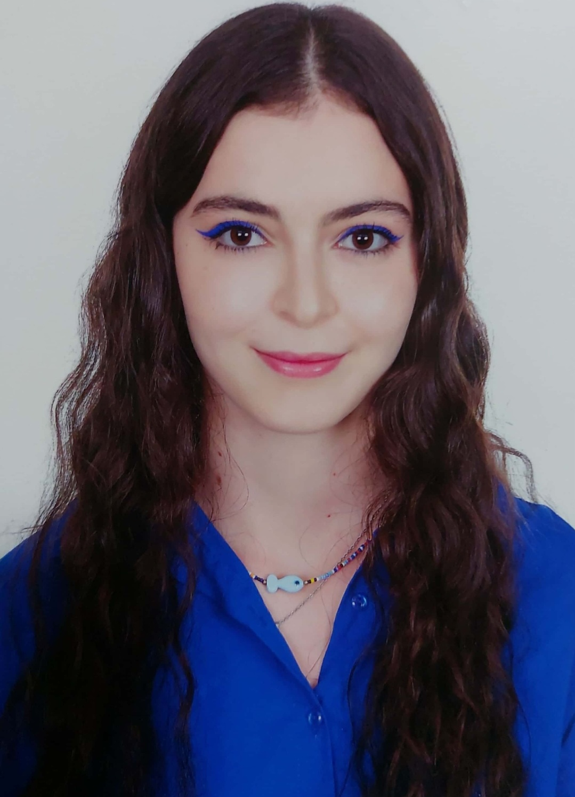

AquaSMART
Solution connectée de suivi en temps réel du niveau et de la qualité de l’eau d’une citerne.
Prix de la meilleure solution technique Certificat Maysene SAIED ↗ Certificat ↗Business Intelligence · IHEC Carthage · Tunis
Étudiante en troisième année de licence en Business Intelligence à l’IHEC Carthage, je conçois et exploite des solutions décisionnelles qui transforment des données brutes en analyses structurées, fiables et directement exploitables pour éclairer la prise de décision. Mon parcours me permet d’explorer différents domaines de la technologie, de la modélisation et de la visualisation des données au développement d’applications web et logicielles, avec un intérêt particulier pour le Machine Learning et l’Intelligence Artificielle.
À la recherche d’un stage de fin d’études (PFE) en Business Intelligence et développement informatique.

Étudiante en Business Intelligence à l’IHEC Carthage, j’ai acquis de solides bases en analyse de données, en langage SQL et en outils décisionnels tels que Power BI et Excel. Je les approfondis en continu à travers des projets académiques et personnels de programmation, de développement web et d’applications, notamment en Python, Java, C# et Angular, ainsi que par une première expérience professionnelle en tant que stagiaire QA chez Linedata.
Je souhaite réaliser mon stage de fin d’études (PFE) au sein d’une équipe expérimentée, en Business Intelligence et en développement informatique, afin de contribuer à des projets concrets à forte valeur ajoutée, d’y mettre en pratique mes compétences analytiques et techniques, et de poursuivre ma progression professionnelle dans ce domaine.
Centres d’intérêt
Linedata
IHEC Carthage
Lycée de La Soukra · Mention bien
Solution connectée de suivi en temps réel du niveau et de la qualité de l’eau d’une citerne.
Prix de la meilleure solution technique Certificat Maysene SAIED ↗ Certificat ↗Application web de consultation de films, développée avec le framework Angular.
Code sur GitHubApplication web de présentation de véhicules pour un showroom automobile, développée avec Angular.
Code sur GitHubApplication universitaire permettant de publier et de partager des projets de fin d’études, conçue en Java selon les principes de la programmation orientée objet.
Code sur GitHubPortfolio personnel accompagné d’une carte interactive des gouvernorats tunisiens, réalisés en HTML, CSS et JavaScript.
Code sur GitHubNettoyage, analyse et visualisation interactive de données historiques.
Code sur GitHubApplication facilitant la consultation des données de la bibliothèque universitaire.
Compétences clés
Linedata · 2026
Rédigée par Emna Elleuch, Senior QA Manager de l’équipe QA Longview et ma supervisrice durant le stage.
Consulter la lettre (PDF)Vie associative
Membre active
Participation à l’organisation d’ateliers, de conférences et d’événements autour de l’innovation, de la finance, de l’entrepreneuriat et des technologies de l’information.
Secrétaire générale (2019 – 2020), membre active (2021 – 2023)
Organisation de projets communautaires et d’événements : travail en équipe, organisation et communication.
Certificats du club
Formations d’initiation
Je serais ravie de vous présenter mon parcours, mes compétences et ma motivation lors d’un entretien.